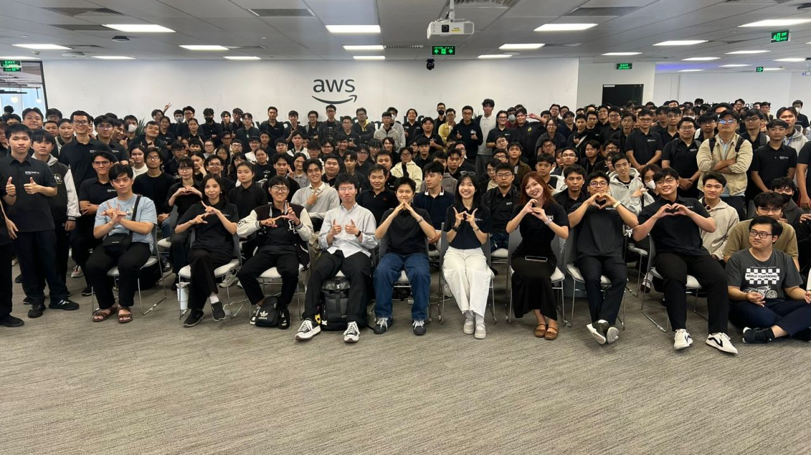

| Field | Details |
|---|---|
| Event Name | FCAJ COMMUNITY DAY - “DATA DRIVEN, AI RISEN” |
| Date & Time | 09:00, Saturday, June 27, 2026 |
| Location | 26th Floor, Bitexco Tower, 02 Hai Trieu Street, Saigon Ward, Ho Chi Minh City |
| Role | Attendee |
| Time | Topic |
|---|---|
| 09:00 – 09:25 | Deep Response Engine: From Detection to Autonomous Resolution |
| 09:25 – 09:55 | Voice Agents: Building Human-Like AI Conversations at Scale |
| 09:55 – 10:20 | AWS DevOps Agent: Your Always-Available Operations Teammate |
| 10:20 – 10:45 | AI-Powered Productivity: Workforce Planning For Enterprise |
| 10:45 – 11:30 | Building Secure Private MCP Connection with Amazon QuickSight Q |
This opening session explored a key question in cloud infrastructure management: how can we automate incident response after an alert is triggered? The speaker proposed moving away from traditional, alert-only notification systems toward action-oriented, self-healing architectures.
Addressing Alert Fatigue in Cloud Operations: Modern microservice environments generate an overwhelming volume of alerts daily. Operations engineers frequently experience “alert fatigue,” making it difficult to isolate critical system anomalies from routine background noise. This delay in identification extends recovery times (MTTD/MTTR), impacting service availability.
Transitioning to Action-Driven Systems: Instead of routing alerts to on-call engineers for manual troubleshooting, action-driven systems:
Deep Response Engine Architecture: The engine uses a layered pipeline: continuous data ingestion (collecting logs, traces, and metrics) → AI-driven anomaly analysis → decision-making reasoning → automated action execution. These components run in parallel to ensure rapid response.
Live Demonstration: The presenter demonstrated a scenario where a containerized service failed. The engine detected the issue, diagnosed the root cause, initiated an automatic rollback to a stable version, and updated the team’s communication channel—all completed in seconds without engineer intervention.
Operational Benefits:
This presentation analyzed the evolution of automated customer interaction, tracing the shift from rigid telephony systems to advanced, natural AI Voice Agents.
The Evolution of Automated Customer Interfaces:
Key Technical Challenges:
Amazon Nova Sonic: The speaker introduced Amazon Nova Sonic, a direct speech-to-speech foundation model. By processing audio input and generating audio output directly without an intermediate speech-to-text translation step, it reduces response latency while preserving voice characteristics like tone and rhythm.
System Data Flow:
Telephony Interface → Audio Stream → Amazon Nova Sonic → Amazon Bedrock Engine → Custom APIs & Tools → Output Audio
This architecture is optimized for low latency and scales to handle high volumes of concurrent calls.
Enterprise Use Cases: Typical deployments include automated customer support, appointment booking, and initial technical triage. The demo showed a Voice Agent answering a customer query, accessing database records, and resolving the request fluidly.
This session introduced an AI-powered operations assistant integrated into the cloud environment, designed to help engineering teams monitor, diagnose, and resolve system anomalies.
Optimizing MTTD and MTTR with AI:
Multi-Cloud Compatibility: The agent is not restricted to AWS; it can connect to and monitor workloads running on Azure, GCP, and hybrid on-premises setups through standardized integrations.
Bedrock AgentCore and Collaborative Multi-Agent Logic: The system uses Amazon Bedrock AgentCore to coordinate multiple specialized micro-agents:
The outputs are aggregated to provide engineers with prioritized, actionable recommendations.
ECS Troubleshooting Scenario: The demo illustrated an ECS task failure: the agent detected the container crash, analyzed the logs to identify a memory leak, recommended adjusting the container’s memory limits, and logged the entire troubleshooting process in an audit trail.
This presentation discussed the application of generative AI and analytics to enterprise resource management and workforce planning.
HR Operational Bottlenecks:
QuickSight Q Capabilities: Amazon QuickSight Q was presented as an AI-powered business intelligence assistant capable of:
Workflow Automation:
Data-Driven Workforce Insights: The platform provides predictive metrics to help managers estimate future talent requirements, identify skill gaps, and implement retention strategies based on data.
The final session focused on the security architectures required to extend Amazon QuickSight Q using the Model Context Protocol (MCP).
QuickSight Q as an Extensible Platform: By integrating MCP, QuickSight Q transitions from an analytics tool into an active assistant capable of querying internal databases and applications securely.
Understanding the Model Context Protocol (MCP): MCP is a standardized interface that allows LLMs to connect with external databases and tools under defined permissions. It replaces custom API integrations with a unified connection standard.
Security Constraints in MCP Deployments:
Configuring VPC Private Connectivity for QuickSight Q: The speaker presented an architecture using VPC Private Endpoints to keep all query traffic between QuickSight Q and the internal MCP servers within the private AWS network.
Demo: The presenter demonstrated a QuickSight Q agent retrieving records from an internal database via a VPC Private Link, ensuring that no data was exposed to the public internet during the process.
This community day featured sessions with high technical density, focusing on real-world implementation details from VPC configurations to direct speech-to-speech model architectures.
The primary takeaway from the event is the shift in how AI is utilized: transitioning from passive, query-response interfaces to active agents that execute workflows. Whether automating system recovery, processing voice calls, or querying databases via private networks, the focus is now on building AI that takes action.
